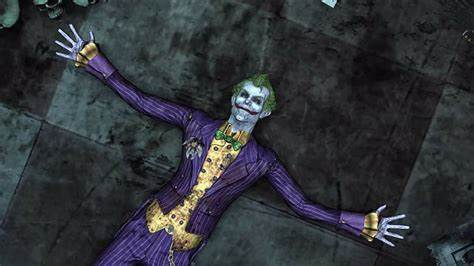
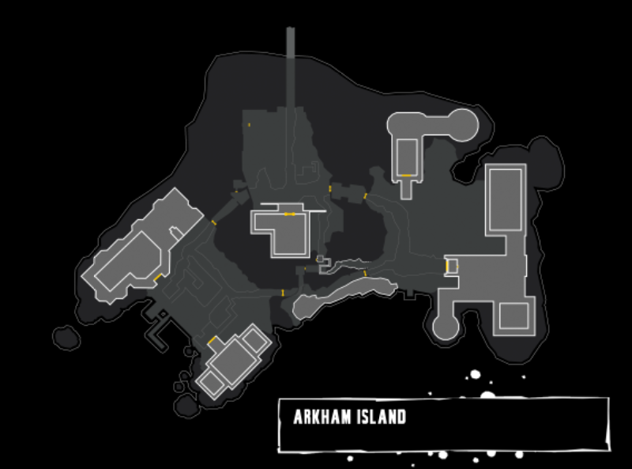

Introducción
El juego se presenta desde la perspectiva de tercera persona con un enfoque principal en las habilidades de combate y sigilo de Batman, sus habilidades de detective y los dispositivos que se pueden usar tanto en el combate como en la exploración. Batman puede moverse libremente por la prisión de Arkham City, interactuando con los personajes y realizando misiones, y desbloqueando nuevas áreas al avanzar en la historia principal u obtener nuevos equipos. El jugador puede completar misiones secundarias fuera de la historia principal para desbloquear contenido adicional y artículos coleccionables. La aliada de Batman, Catwoman, es otro personaje jugable, que presenta su propia campaña de historia que corre paralela a la trama principal del juego.
Ambientacion
Los eventos de Arkham City tienen lugar un año y medio después de Arkham Asylum. Quincy Sharp, exdirector del Asilo Arkham, se llevó todo el crédito por detener la toma del Asilo organizada por el Joker, y aprovechó esa notoriedad para convertirse en el nuevo alcalde de Gotham City. Considerando que Arkham y la Penitenciaría Blackgate ya no son adecuadas para contener los criminales y dementes de la ciudad, Sharp cierra ambas instalaciones y compra una gran parte de los barrios bajos de Gotham, para convertirlos en una inmensa prisión de máxima seguridad al aire libre llamada Arkham City. Gotham se convierte en un estado policíaco, donde los que tienen el más mínimo rastro de antecedentes criminales, y los opositores a las políticas de Sharp, incluidos los reporteros, son enviados a Arkham City. El lugar está bajo el cuidado del genio psiquiatra Hugo Strange —que está secretamente manipulando a Sharp— y es custodiado por un escuadrón de mercenarios fuertemente armados, pertenecientes a Seguridad TYGER, una corrupta empresa militar privada. A los reclusos se les da rienda suelta, siempre y cuando no traten de escapar. Batman mantiene su propia vigilancia sobre la ciudad de detención, preocupado de que la caótica situación se le vaya de las manos. Mientras tanto, el Joker es afectado por una enfermedad potencialmente mortal, causada por su haber consumido la fórmula Titán, un inestable suero hecho con esteroides que tiene la habilidad de convertir a los hombres en poderosos monstruos enloquecidos.
Villanos
Harley Quinn
Harleen Quinzel, conocida como Harley Quinn, es un personaje fascinante con una historia compleja. Comenzó como una estudiante de psiquiatría en la Universidad de Gotham, donde utilizó su encanto para influir en sus profesores y avanzar en sus estudios. Después de graduarse con honores, comenzó a trabajar en el manicomio Arkham, donde se encontró con el Joker. Fascinada por las mentes criminales, Harley se sintió inmediatamente atraída por él. El Joker, a su vez, mostró interés en ella, dejando una rosa en su oficina con una invitación para que lo visitara. Su nombre, que evoca la imagen de un arlequín, simboliza la frivolidad y la diversión, algo que resonó con el Joker. Después de persistir durante meses, Harley logró obtener permiso para tener sesiones terapéuticas con él, lo que marcó el comienzo de su complicada relación.
Poison Ivy
Poison Ivy, cuyo nombre real es Pamela Lillian Isley, es un personaje ficticio en el universo de DC Comics. Ella es una destacada botánica y bioquímica de Gotham City que se transforma en una supervillana después de un experimento que altera su fisiología. Isley fue inyectada con toxinas en un experimento que buscaba crear inmunidad al veneno, lo que resultó en su capacidad para controlar las plantas y producir feromonas para manipular a las personas.

Killer Croc
Killer Croc, cuyo nombre real es Waylon Jones, es un personaje ficticio en el universo de DC Comics, conocido por ser uno de los villanos de Batman. Su origen se remonta a una rara condición genética que le dio la apariencia de un cocodrilo. Esta condición, conocida como hiperqueratosis epidermolítica, lo hizo desarrollar una piel gruesa y escamosa, similar a la de un reptil.
Scarecrow
El Espantapájaros, cuyo nombre real es Jonathan Crane, es un supervillano del universo de DC Comics. Es un ex profesor de psicología en Gotham City que utiliza una variedad de toxinas experimentales para explotar las fobias de sus víctimas. Crane fue abusado y acosado en su juventud, lo que lo llevó a desarrollar una obsesión por el miedo. Utiliza una droga alucinógena especialmente diseñada, conocida como “toxina del miedo”, para aterrorizar a los ciudadanos de Gotham y a Batman, el protector de la ciudad.
Bane
Bane, cuyo nombre real es Dorrance, es un supervillano en el universo de DC Comics. Su historia comienza en la prisión de Peña Duro, ubicada en la isla caribeña de Santa Prisca. Nació y creció en esta prisión, cumpliendo la condena de su padre. A pesar de las duras condiciones, Bane se convirtió en un hombre de gran inteligencia y fuerza física. Se educó en diversas disciplinas gracias a los libros que leía y a los maestros que encontró, incluyendo a un sacerdote jesuita.
El Villano Principal: El Joker
Asies, otra vez esta de regreso el joker, pero esta vez parece que esta enfermo gracias al suero TITAN que se inyecto en la anterior entrega "Batman Arkham Asylum", aca veremos como acaba todo para el joker, como su enfermedad puede con el y como impacta en batman.
Aca no hay un villano principal, sino que hay varios, desde el pinguino, deadshot hasta Mr.Freeze que le hacen la vida complicada a batman.
Mapa del Asilo Arkham
El mapa muestra todas las áreas principales del Asilo Arkham, incluyendo celdas, laboratorios, y áreas de máxima seguridad.